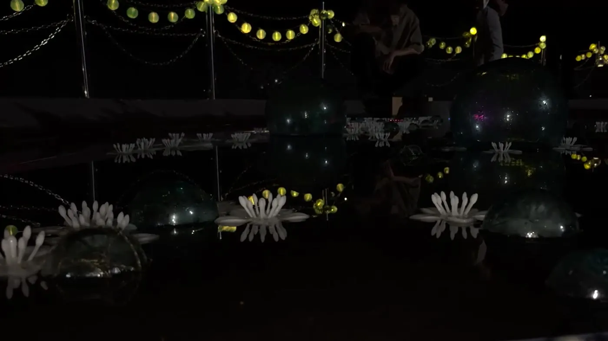
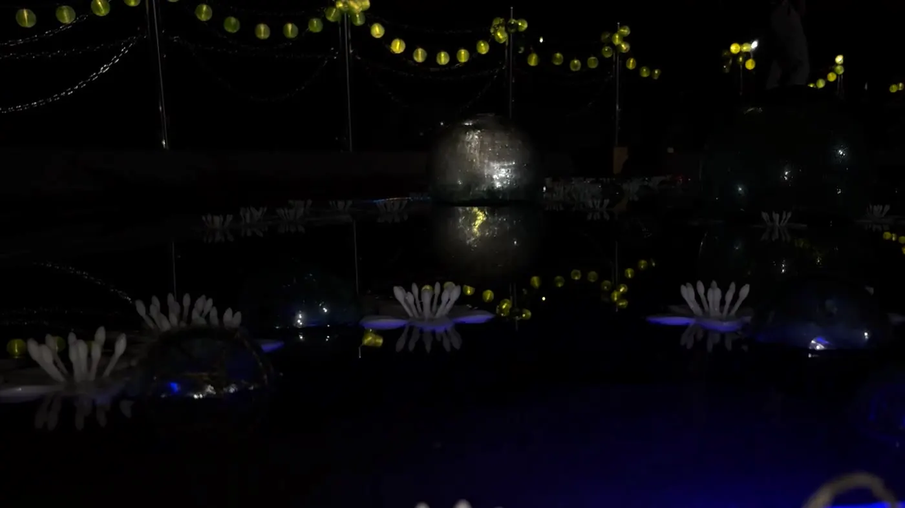

お花の池・
小鳥の森
池の周囲を歩く人をLiDARで検出し、その動きを仮想生命の振る舞いへ変換。225個のガラス浮き玉と約1,200灯のLED、7種の虫の音を通して、池と森へ返した夜間インスタレーションです。
- Year / Duration
- 2025年8月16–24日
- Location
- 弟子屈ふれあい広場
釧路川源流感謝祭 - Materials
- ガラス浮き玉225個、LED約1,200灯、スピーカー、蓄光PLA
- Technology
- LiDAR、点群処理、リアルタイムシミュレーション
- Role
- 企画、システム設計、ソフトウェア、造形、設置


01 — 出発点
会場には既存の池と、その背後に森がありました。スクリーンを持ち込むのではなく、人が歩く現実の場所そのものをインターフェースにし、水面と林の間へ反応を返すことから設計しました。
02 — 仕組み
LiDARの点群から静止している地形や構造物を除き、動いている人だけを抽出します。現実の座標とシミュレーション空間を対応させ、人の位置を仮想生命への刺激として入力。その結果を、池に配置した浮き玉の光と森から聞こえる音へ変換しました。
観客が池の周囲を移動すると、光はその動きを直接追跡するのではなく、遅れや群れの振る舞いを含んで広がります。
03 — 判断
技術を前面に見せず、日中もその場所に残れる物として、土地で使われてきたガラス浮き玉を選びました。LEDは水面へ強い反射が出ない向きに調整。LiDARは検出距離を絞り、樹木の揺れなどによる誤反応を抑えました。
虫の音は7種を用意し、光と同様に単純なボタン反応にしないことで、夜の環境音へ混ざる余白を残しました。
04 — 公開後
この作品で残った課題は、観客の動きと反応の因果をどこまで分かりやすくするかです。反応が明快すぎると遊具になり、曖昧すぎると環境演出に見える。その間を、次の空間作品でも検討しています。